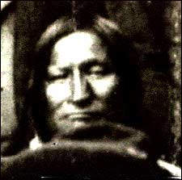
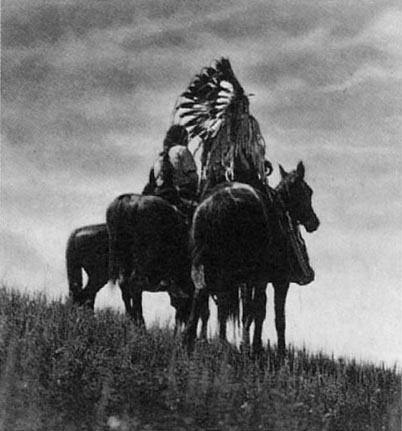

|
|
 |
| There isn’t much known on the biographical details
about this Southern Cheyenne chief. Many speak of him as a great leader for
his repeated efforts to protect peace with honor. Even though he had broken
promises and attacks on life. He knew a lot of possibilities and some existence
between the whites society and the plains culture. |
| Black Kettle was born in 1813, and was a terrific young
warrior. When he was in his middle age, during the summer, he was a widely
recognized chief of the Southern Cheyenne. Also he was married to a woman
by the name of Medicine Women. |
| He lived on the territory
of western Kansas and the eastern part of Colorado that was given to the
Cheyenne through the Fort Laramie Treaty of 1851. |
| The ‘Man of Peace’ had a good friend named Lean Bear.
They went together to Washington and had shaken hands with the so-called Great
Father Lincoln. There, President Lincoln gave Black Kettle and Lean Bear
medals to wear and papers showing that they were good friends of the United
States. Unfortunately, it didn’t help, because more things got confusing on
the plains. Including there being talk soldiers were attacking Cheyenne. Especially
when Lean Bear went out to meet the Bluecoats as they came to Ash Creek,
the Cheyenne camp. When he had gotten up close to them, they opened fire
and killed Lean Bear. Black Kettle was very confused and didn’t understand,
cause Lean Bear had shown the Bluecoats his medal and paperwork. |
| After the 1859 pikes Peak Gold Rush, Black Kettle agreed
to the treaty of 1861 hoping and seeing that the Cheyenne obeyed his decisions. |
| In 1863, a principal chief of the Cheyenne, Black Kettle,
met with President Lincoln. He had to travel from his Colorado territory (home)
all the way to Washington D.C. there he expressed his loyalty to the United
States government. Lincoln gave Black Kettle a U.S. flag that meant it would
serve protection for his people. It was kind of like a gift of his loyalty. |
| The next following year, Black Kettle journeyed to
Denver to have a talk with Colonel John W. Chivington and Governor John Evens
(head of the Colorado Volunteers). Black Kettle told them, “I want you to
give all these chiefs of the soldiers here to understand that we are for peace,
and that we have made peace, that we may not be mistaken for enemies.” He
also spoke and said, “ All we ask is that we have peace with the whites. We
want to hold you by the hand. You are our father. We have been traveling through
a cloud. The sky has been dark ever since the war began. There braves who
are with me art willing to do what I say. We want to take good tidings home
to our people, which they may sleep in peace. I want you to give all these
chiefs of the soldiers here to understand that we are for peace, that they
may not mistake us for enemies. I have not come here with a little wolf bark,
but have come to talk plain with you.” |
| Black Kettle always believed that all of his actions would protect his people to keep them safe, but he had efforts that weren’t responded to. |
| Black Kettle always believed that all of his actions
would protect his people to keep them safe, but he had efforts that weren’t
responded to. To conclude, on November 29, 1864, under the command of Colonel John W. Chivington, a former Methodist preacher with political ambitions, his troops destroyed the Cheyenne camp of Chief Black Kettle and Chief White Antelope at Sand Creek in eastern Colorado, on the plains. Black Kettle raised his American flag and his white flag to make sure they new it wasn’t just any souvenir. The year before he was given a 34 star flag, saying no one would shoot or open fire at anyone under the stars and stripes. The commissioner of Indian Affairs, Colonel Greenwood, in Washington, gave it. When Black Kettle would stay in one place for a long time, he would put the flag on his tipi, which was in the middle of the camp. He thought he was at peace with the whites when he did this with the flag. They were under the force of Fort Lyon. So Black Kettle told his people not to be afraid of the soldiers opened fire on both sides of their camp. They were shooting directly into the crowd around Black Kettle and making them scatter. Somehow he survived and escaped harm at that Sand Creek Massacre, and he even had returned to save his injured wife. But Black Kettle had watched 105 of his women and children and 28 of his old men killed and cut horribly underneath the flag he had raised. |
 |
| Even though Black Kettle survived the Sand Creek Massacre
he was pronounced dead, but a year later he met with the U.S. government treaty
makers, still being determined to find a way to live in peace with white
men, at the mouth of the Little Arkansas River in Kansas and said,” Although
the troops have struck us, we throw it all behind and are glad to meet you
in peace and friendship. What you have come here for, a what the president
has sent for, I don’t object to, but say yes to it… The white people can
go wherever they please and they will not be disturbed by us, and I want you
to let them know… We are different nations, but it seems as if we were but
one people, whites and all… Again, I take you by the hand, and I feel happy.
These people that are with peace once more, and can sleep soundly, and that
we can live.” |
| After Black Kettle
spoke then he gave a long speech at the Little Arkansas River, which indicated
the compliance with the white man’s wishes. |
| Speech: “The Great Father above hears us, and the Great
Father at Washington will hear what we say. Is it true that you come here
from Washington, and is it true what you say here today? The Big Chief he
gave his words to me to come and meet you here, and I take hold and retain
what he says. Believe all to be true, and think it is all true. Their young
white men, when I meet them on the plains, I give them my horse and my moccasins,
and I am glad today to think that the Great Father has sent good men to take
pity on us. Your young soldiers I don’t think they listen to you. You bring
presents, and when I come to get them I am afraid they will strike me before
I get away. When I come in to receive presents I take them up crying. Although
wrongs have been done me, I live in hopes. I call them into the lodge and
talk with them; they listen to me and mind what I say. Now we are again together
to make peace. My shame is as big as the earth, although I will do what my
friends advise me to do. I once thought that I was the only man that preserved
to be the friend of the white man, but since they have come and cleaned out
our lodges, horses, and everything else, it is hard for me to believe white
men anymore. Here we are together, Arapahos and Cheyenne, but few of us, we
are one people. As soon as you arrived you started runners after the Arapahos,
with words that I took hold of immediately on hearing them and us. From what
I can see around me. I feel confident that our Great Father has taken pity
on me, and I feel that it is the truth all that has been told me today. All
my friends the Indians that are holding back they are afraid to come in; are
afraid they will be betrayed as I have been. I am not afraid of white men,
but come and take you by the hand, and am glad to have an opportunity of
so doing. These lands that you propose to give us I know nothing about.
There is but a handful here now of the Cheyenne nation, and I would rather
defer making any permanent treaty until the others come. We are living friendly
now. There are a great many white men. Possibly you may be looking for someone
with a strong heart. Possibly you may be intending to do something for me
better than I know of. As my Great Father has sent you here to take us by
the hand, why is it that we are prevented from crossing the Arkansas? If we
give you our hands in peace, we give them also to those of the plains. We
want the privilege of crossing the Arkansas to kill buffalo. I have but few
men here, but what I say to them they listen, and they will abide by their
promise whatever it may be. All these young soldiers are taking us by the
hand, and I hope it will come back good times as formerly. It is very hard
to have one half of our nation absent at this time; we wish to get through
at once. My friends, I want you to understand that I have sent up north for
my people, and I want the road open for them to get here. I hope that which
you have said will be just as you have told me, and I am glad to hear such
good council from you. When my friends get down from north I think it will
be the best time to talk about the lands. There are so few here it would not
look right to make a treaty for the whole nation, and so many absent. I hope
you will use your influence with the troops to pen a road for my men to get
here. You may mark out the lands you propose giving us, but I know nothing
about them; it is a new country to me. I have been in great hopes that I
may see my children that were taken prisoners last fall, and when I get here
I do not see them. I feel disappointed. My young men here, and friends, when
we meet in council and come to the conclusion, it is the truth, we do not
vary from it. This lady’s husband (Mrs. Wilmarth) Major Fitpatrick, when
he was our agent and brought us presents he did not take them into forts and
house, but would drive his wagons into our villages and empty them there.
Everyone would help him or herself and feel good. He has gone ahead of us,
and he told us that when he was gone we would have trouble, and it has proved
true. We are sorry. But since the death of Major Fitzpatrick we have had many
agents. I don’t know as we have been wronged, but it looks so. The amount
of good has dimisnished; it doesn’t look right. Has known Colonel Leavenworth
for sometime; he has treated me well; whether it will continue or not I do
not know. He has got a strong heart, and has done us a great deal of good.
Now that times are so uncertain in this country I would like to have my old
friend Colonel Bent with me. This young man, Charles Wrath, does not get tired.
He is always ready to go and meet them and give them whatever news he has
to send to them. There maybe wrongs done, but we want to show who does these
wrongs before you censure us. I feel that the Great Father has taken pity
on us, and that ever since we have met Colonel Leavenworth’s words have been
true, and nothing done since that time but what is true, I heard that some
chiefs were sent here to see us. We have brought our women and children,
and how we want to see if you are going to have pity on us.” |
| Black did sign the
Little Arkansas Treaty, but it didn’t let the Cheyenne have any access to
the hunting grounds of Kansas. Not all the Cheyenne followed him to this
reservation; others went to join the Northern Cheyenne in Lakota territory. |
| Black Kettle spoke to the Indians at Medicine Lodge
Creek, “We were once friends with the whites but you nudged us out of the
way by you intrigues, and now when we are in council you keep nudging each
other. Why don’t you talk and go straight, and let all be well.” |
| The next step was Black Kettle signed the Medicine
Lodge Treaty of 1867, but after they settled on the new land they didn’t receive
anything they promised. So most were driven to join Roman Nose and his band.
Many of Black Kettle’s warriors came back to his band when Roman Nose died
in the fall of 1868. After this Black Kettle spoke to them about war against
the whites, when he had just returned from Fort Cobb a couple days ago. |
| In Fort Cobb he met
with General Hazen who told Black kettle his village wouldn’t be attacked.
General Hazen, figuring he wouldn’t see Black kettle again, offered coffee,
sugar, and tobacco. Haze had known all about Sheridan’s plan. Black Kettle
refused to move down river to another camp with the encampment of the Cheyenne,
Kiowa, and Apaches. He also wouldn’t believe that Sheridan would attack without
an offer of peace. |
| Before dawn, that
cavalry went right through 51 lodges, killing men, women, and children. Black
Kettle and Medicine Woman had both rushed from their lodge at the first booming
of guns. Black kettle and his wife hopped on a horse and returned to head
across the Washita River. But the chief and wife were riddled with the bullets
by the riverbank. Even the horse was shot and killed. ‘Red Shin tells me
that the soldiers rode right over Black Kettle and Medicine Woman (his wife),
and their horse, laying dead on the ground, and their bodies were splashed
with mud from the charging soldiers. Custer had later reported that an Osage
guide had taken Black Kettle’s scalp. |
| Katelyn Martinek Rossville Jr. High 2002 Plains Project Bibliography |